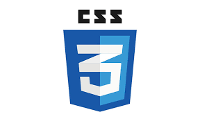

情報学
HTML
CSS
JAVA
CSSとはなにか

CSSとは、Cascading Style Sheets（カスケーディング・スタイル・シート）の略です。
ウェブページの色や枠、線など様々なスタイルを指定するための言語です。
CSSもHTMLと同じように組み合わせ構成することで見栄えが良くなります。
(例)
.example{ border: double 10px; columns: #ff0000;; }
.body{ font-family: "Avenir Next" } li{ list-style: none; }
.header{ background-color:#82aaaa; color:#fff; height:90px; }
.footer{ background-color:#82aaaa; color: #fff; height: 120px; padding:60px; }
などです。これ以外にもありますがここでは、この説明の二重線の枠やボディ、ヘッダー、フッダーの色を構成するものを例としました。
HTMLと違う点は初めは<>終わりに</>で閉じるのがHTMLでしたがCSSは「.」でIDを指定し｛｝の中に要素を入れることが多いです。